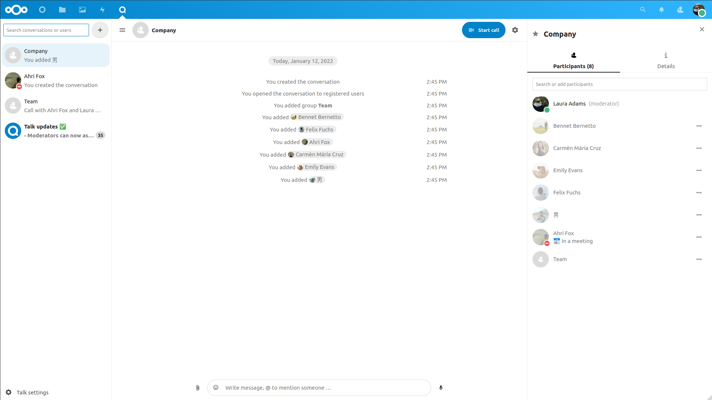

Basics of Nextcloud Talk
Nextcloud Talk lets you chat and have video calls on your own server.
Chats and calls take place in conversations. You can create any number of conversations. There are two kinds of conversations:
One-on-one conversations. This is where you have a private chat or call with another Talk user. You can’t add other people to this conversation or share it with a link. You start a direct one-on-one chat by looking for another user in the search bar and then clicking their name.
Group conversations. Besides the person who created the conversation, a group conversation can have any number of people in it. A group conversation can be shared publicly with a link, so external guest users can join a call. It can also be listed, so other people on your Nextcloud server can join the conversation.
Creating a chat
You can create a direct, one-on-one chat by searching for the name of a user, a group or a circle and clicking it. For a single user, a conversation is immediately created and you can start your chat. For a group or circle you get to pick a name and settings before you create the conversation and add the participants.

If you want to create a custom group conversation, click the plus button next to the search field. You can then pick a name for the conversation and select if the conversation should be open to external users and if other users on the server can see and join the conversation.

In the second step, you get to add participants and finalize the creation of the conversation.

You can cancel the creation of a conversation by clicking outside the white menu area at any time.
Sharing files in a chat
You can share files in a chat in 3 ways.
First, you can simply drag’n’drop them on the chat.

Second, you can select a file from your Nextcloud Files or a file manager by choosing the little paperclip and selecting where you’d like to pick the file from.


You can add more files until you are done and decide to share the files.

All users will be able to click the files to view, edit or download them, irrespective of them having a user account. Users with an account will have the file automatically shared with them while external guest users will get them shared as a public link.

Inserting emoji
You can add emoji using the picker on the left of the text input field.

Replying to messages and more
You can reply to a message using the arrow that appears when you hover a message.

In the ... menu you can also choose to reply privately. This will open a one-on-one chat.

Here you can also create a direct link to the message or mark it unread so you will scroll back there next time you enter the chat. When it is a file, you can view the file in Files.
Managing a conversation
You are always moderator in your new conversation. In the participant list you can promote other participants to moderators using the ... menu to the right of their user name, assign them custom permissions or remove them from the conversation.
Changing permissions of a user that joined a public conversation will also permanently add them to the conversation.

Moderators can configure the conversation. Select Conversation settings from the gear menu of the conversation on the top to access the settings.

Here you can configure the description, guest access, if the conversation is visible to others on the server and more.

Starting a call
When you’re in a conversation, you can start a call any time with the Start call button. Other participants will get notified and can join the call. If somebody else has started a call already, the button will change in a green Join call button.

During a call, you can mute your microphone and disable your video with the buttons on the right side of the top bar, or using the shortcuts M to mute audio and V to disable video. You can also use the space bar to toggle mute. When you are muted, pressing space will unmute you so you can speak until you let go of the space bar. If you are unmuted, pressing space will mute you until you let go.
You can hide your video (useful during a screen share) with the little arrow just above the video stream. Bring it back with the little arrow again.
You can access your settings and choose a different webcam, microphone and other settings in the ... menu in the top bar.


Changing view in a call
You can switch the view in a call with the little four-block icon in the top-right between promoted-view and grid view. The grid view will show everyone equally big and if the people do not fit on the screen, buttons will appear on the left and right that let you navigate.

The promoted view shows the speaker large and others in a row below. If the people do not fit on the screen, buttons will appear on the left and right that let you navigate.